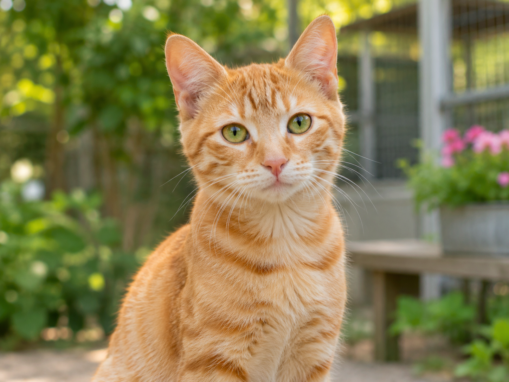

Luna
Perra mestiza · 4 años
Luna es cariñosa, tranquila y disfruta de los paseos. Se lleva bien con otros perros y busca una familia con la que compartir muchos momentos.
Ellos buscan un hogar. ¿Quieres conocerlos?
Perra mestiza · 4 años
Luna es cariñosa, tranquila y disfruta de los paseos. Se lleva bien con otros perros y busca una familia con la que compartir muchos momentos.

Gato común europeo · 1 año
Milo es curioso, juguetón y muy sociable. Le encantan las caricias y observar todo desde un lugar alto.

Perra mestiza · 3 años
Nala es inteligente y activa. Aprende con rapidez, disfruta jugan do y necesita un hogar que pueda ofrecerle paseos diarios.

Gata común europea · hembra
Escarcha es una gata de otra protectora y ya fue adoptada. Puedes conocer su historia en la web de Protectora Baix Vinalopó.
¿Quieres adoptar o necesitas más información?